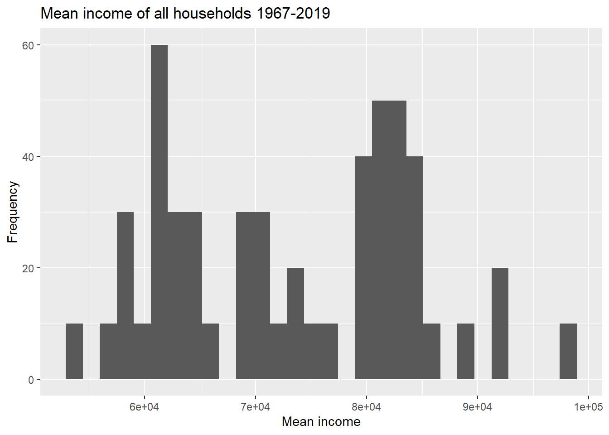
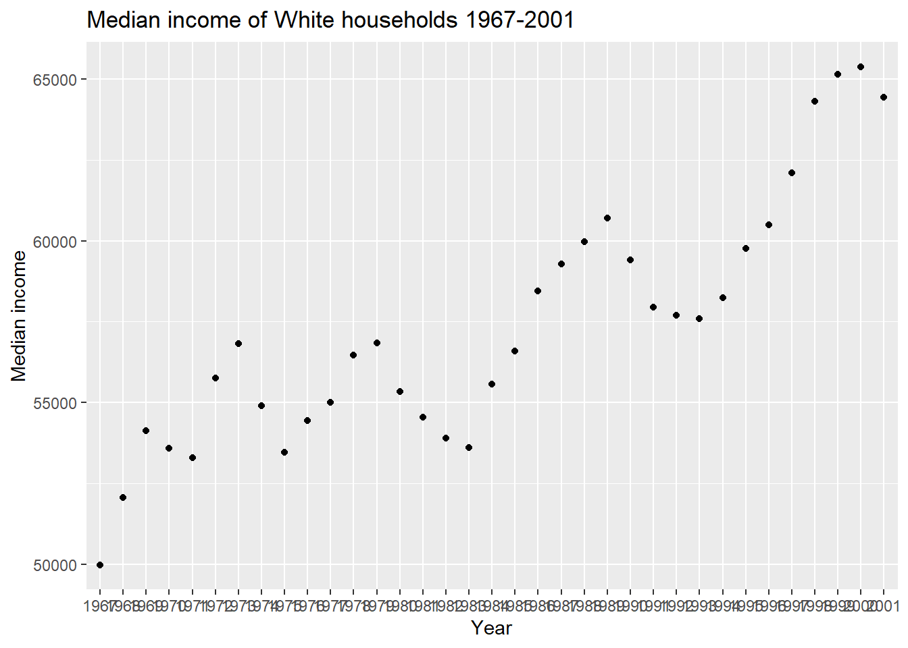
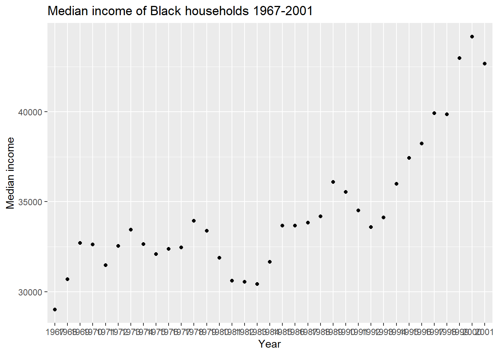

read in a data set, and describe the data set using both words and any supporting information (e.g., tables, etc)
tidy data (as needed, including sanity checks)
mutate variables as needed (including sanity checks)
create at least two univariate visualizations
try to make them “publication” ready
Explain why you choose the specific graph type
Create at least one bivariate visualization
try to make them “publication” ready
Explain why you choose the specific graph type
R Graph Gallery is a good starting point for thinking about what information is conveyed in standard graph types, and includes example R code.
(be sure to only include the category tags for the data you use!)
Read in data
Read in one (or more) of the following datasets, using the correct R package and command.
cereal.csv ⭐
Total_cost_for_top_15_pathogens_2018.xlsx ⭐
Australian Marriage ⭐⭐
AB_NYC_2019.csv ⭐⭐⭐
StateCounty2012.xls ⭐⭐⭐
Public School Characteristics ⭐⭐⭐⭐
USA Households ⭐⭐⭐⭐⭐
The dataset contains mean income and median income data from 1967 to 2019 across different race categories: all races, white, white alone, white alone not hispanic, white not hispanic, black, black alone or in combination, black alone, asian alone or in combination, asian alone, asian alone or in combination, asian and pacific islander, hispanic (any race). The dataset also breaks each race category down into income range percents: under 15000, 15000 to 24999, 25000 to 34999, 35000 to 49999, 50000 to 74999, 75000 to 99999, 100000 to 149999, 150000 to 199999, over 200000. A case is a race category in a year.
household <-read_excel("_data/USA Households by Total Money Income, Race, and Hispanic Origin of Householder 1967 to 2019.xlsx", sheet="tableA2", range="A5:P357")household2 <- household %>%mutate(index =1:n(), #add index and race columnsrace =case_when(between(index, 2, 56) ~"all races",between(index, 58, 77) ~"white alone",between(index, 79, 113) ~"white",between(index, 115, 134) ~"white alone not hispanic",between(index, 136, 165) ~"white not hispanic",between(index, 167, 186) ~"black alone or in combination", between(index, 188, 207) ~"black alone",between(index, 209, 243) ~"black",between(index, 245, 264) ~"asian alone or in combination",between(index, 266, 285) ~"asian alone",between(index, 287, 301) ~"asian and pacific islander",between(index, 303, 352) ~"hispanic (any race)" ),year =str_sub(`...1`, 1, 4), #remove superscripts from year, there are duplicatesnumber_in_thousands =`...2`) %>%select(-c(`...1`,`...2`, index)) %>%filter(!is.na(Total)) %>%select(race, year, everything()) %>%#reorder columns %>%distinct(race, year, .keep_all=TRUE) #keep the top duplicate since it is the most updated datahead(household2)
# A tibble: 6 × 17
race year Total Under …¹ $15,0…² $25,0…³ $35,0…⁴ $50,0…⁵ $75,0…⁶ $100,…⁷
<chr> <chr> <dbl> <dbl> <dbl> <dbl> <dbl> <dbl> <dbl> <dbl>
1 all races 2019 100 9.1 8 8.3 11.7 16.5 12.3 15.5
2 all races 2018 100 10.1 8.8 8.7 12 17 12.5 15
3 all races 2017 100 10 9.1 9.2 12 16.4 12.4 14.7
4 all races 2016 100 10.4 9 9.2 12.3 16.7 12.2 15
5 all races 2015 100 10.6 10 9.6 12.1 16.1 12.4 14.9
6 all races 2014 100 11.4 10.5 9.6 12.6 16.4 12.1 14
# … with 7 more variables: `$150,000\r\nto\r\n$199,999` <dbl>,
# `$200,000 and over` <dbl>, Estimate...13 <dbl>,
# `Margin of error1 (±)...14` <dbl>, Estimate...15 <chr>,
# `Margin of error1 (±)...16` <chr>, number_in_thousands <chr>, and
# abbreviated variable names ¹`Under $15,000`, ²`$15,000\r\nto\r\n$24,999`,
# ³`$25,000\r\nto\r\n$34,999`, ⁴`$35,000\r\nto\r\n$49,999`,
# ⁵`$50,000\r\nto\r\n$74,999`, ⁶`$75,000\r\nto\r\n$99,999`, …
Generated by summarytools 1.0.1 (R version 4.2.2) 2023-03-29
Briefly describe the data
Tidy Data (as needed)
Is your data already tidy, or is there work to be done? Be sure to anticipate your end result to provide a sanity check, and document your work here.
The data is not tidy. Each income range has its own percent column. There are ten such percent columns, and they can be turned into two columns: one column denoting the range, and another column for the percent amount. There are seven columns used to identify a case, so the number of expected rows after this pivot is nrow(household2) * (ncol(household2)-7) = 3240 rows. The data has 17 variables before the pivot and 10 variables to be pivoted into 2 variables, so the number of expected columns is 9 columns. The summary output of household25, which is the resulting dataset after this pivot, has 3240 rows and 9 columns as expected.
Each income estimate also has separate columns for mean, the corresponding margin of error, median, and the corresponding margin of error. These four columns can be turned into three columns: one denoting whether the estimate is a mean or median, another for the estimate value, and one for the margin of error. There are seven variables used to identify a case, so the number of expected rows after this pivot is nrow(household25) * (ncol(household25)-7) = 6480 rows. The data has 9 variables before the pivot and 4 variables to be pivoted into 3 variables, so the expected number of columns is 8 columns. The summary output of household 35, which is the resulting dataset after this pivot, has 6480 rows and 8 columns as expected.
head(household2)
# A tibble: 6 × 17
race year Total Under …¹ $15,0…² $25,0…³ $35,0…⁴ $50,0…⁵ $75,0…⁶ $100,…⁷
<chr> <chr> <dbl> <dbl> <dbl> <dbl> <dbl> <dbl> <dbl> <dbl>
1 all races 2019 100 9.1 8 8.3 11.7 16.5 12.3 15.5
2 all races 2018 100 10.1 8.8 8.7 12 17 12.5 15
3 all races 2017 100 10 9.1 9.2 12 16.4 12.4 14.7
4 all races 2016 100 10.4 9 9.2 12.3 16.7 12.2 15
5 all races 2015 100 10.6 10 9.6 12.1 16.1 12.4 14.9
6 all races 2014 100 11.4 10.5 9.6 12.6 16.4 12.1 14
# … with 7 more variables: `$150,000\r\nto\r\n$199,999` <dbl>,
# `$200,000 and over` <dbl>, Estimate...13 <dbl>,
# `Margin of error1 (±)...14` <dbl>, Estimate...15 <chr>,
# `Margin of error1 (±)...16` <chr>, number_in_thousands <chr>, and
# abbreviated variable names ¹`Under $15,000`, ²`$15,000\r\nto\r\n$24,999`,
# ³`$25,000\r\nto\r\n$34,999`, ⁴`$35,000\r\nto\r\n$49,999`,
# ⁵`$50,000\r\nto\r\n$74,999`, ⁶`$75,000\r\nto\r\n$99,999`, …
str(household2)
tibble [324 × 17] (S3: tbl_df/tbl/data.frame)
$ race : chr [1:324] "all races" "all races" "all races" "all races" ...
$ year : chr [1:324] "2019" "2018" "2017" "2016" ...
$ Total : num [1:324] 100 100 100 100 100 100 100 100 100 100 ...
$ Under $15,000 : num [1:324] 9.1 10.1 10 10.4 10.6 11.4 11.4 11.4 11.6 11.2 ...
$ $15,000
to
$24,999 : num [1:324] 8 8.8 9.1 9 10 10.5 10.3 10.6 10.2 10.7 ...
$ $25,000
to
$34,999 : num [1:324] 8.3 8.7 9.2 9.2 9.6 9.6 9.5 10.1 10.2 9.4 ...
$ $35,000
to
$49,999 : num [1:324] 11.7 12 12 12.3 12.1 12.6 12.5 12.5 13.1 13.3 ...
$ $50,000
to
$74,999 : num [1:324] 16.5 17 16.4 16.7 16.1 16.4 16.8 17.4 17.2 16.8 ...
$ $75,000
to
$99,999 : num [1:324] 12.3 12.5 12.4 12.2 12.4 12.1 12 12 11.9 12.4 ...
$ $100,000
to
$149,999: num [1:324] 15.5 15 14.7 15 14.9 14 13.9 13.9 13.8 14.1 ...
$ $150,000
to
$199,999: num [1:324] 8.3 7.2 7.3 7.2 7.1 6.6 6.7 6.3 6.2 6.3 ...
$ $200,000 and over : num [1:324] 10.3 8.8 8.9 8 7.2 6.8 6.9 5.9 5.8 5.9 ...
$ Estimate...13 : num [1:324] 68703 64324 63761 62898 60987 ...
$ Margin of error1 (±)...14 : num [1:324] 904 704 552 764 570 ...
$ Estimate...15 : chr [1:324] "98088" "91652" "91406" "88578" ...
$ Margin of error1 (±)...16 : chr [1:324] "1042" "914" "979" "822" ...
$ number_in_thousands : chr [1:324] "128451" "128579" "127669" "126224" ...
Generated by summarytools 1.0.1 (R version 4.2.2) 2023-03-29
Are there any variables that require mutation to be usable in your analysis stream? For example, do you need to calculate new values in order to graph them? Can string values be represented numerically? Do you need to turn any variables into factors and reorder for ease of graphics and visualization?
The pivot procedures did not translate the income ranges into clean strings. The income_range variable contains extraneous characters such as backslash r and backslash n which need to be removed; this can be fixed by using the mutate and case_when to clean the strings. Also the mean estimate and margin of error are of character types, because there is a cell which contains N as a value. It corresponds to Asian and Pacific Islander in 1987, and the footnote states that a new data processing system was being instituted that year. These mean and margin of error columns will need to be converted to numeric in order to plot.
Document your work here.
household3 <- household2 %>%pivot_longer(col =`Total`:`$200,000 and over`,names_to="income_range",values_to ="percent") %>%mutate(median1estimate =`Estimate...13`, median1margin_of_error =`Margin of error1 (±)...14`, mean1estimate =as.numeric(`Estimate...15`), mean1margin_of_error =as.numeric(`Margin of error1 (±)...16`), income_range =case_when(income_range =="Total"~"Total", income_range =="Under $15,000"~"Under $15,000", income_range =="$15,000\r\nto\r\n$24,999"~"$15,000 to $24,999", income_range =="$25,000\r\nto\r\n$34,999"~"$25,000 to $34,999", income_range =="$35,000\r\nto\r\n$49,999"~"$35,000 to $49,999", income_range =="$50,000\r\nto\r\n$74,999"~"$50,000 to $74,999", income_range =="$75,000\r\nto\r\n$99,999"~"$75,000 to $99,999", income_range =="$100,000\r\nto\r\n$149,999"~"$100,000 to $149,999", income_range =="$150,000\r\nto\r\n$199,999"~"$150,000 to $199,999", income_range =="$200,000 and over"~"$200,000 and over")) %>%select(-c(`Estimate...13`, `Margin of error1 (±)...14`, `Estimate...15`, `Margin of error1 (±)...16`)) %>%pivot_longer(c('median1estimate', 'median1margin_of_error', 'mean1estimate', 'mean1margin_of_error'), names_to=c("est_type", ".value"), names_sep ="\\d")head(household3)
# A tibble: 6 × 8
race year number_in_thousands income_r…¹ percent est_t…² estim…³ margi…⁴
<chr> <chr> <chr> <chr> <dbl> <chr> <dbl> <dbl>
1 all races 2019 128451 Total 100 median 68703 904
2 all races 2019 128451 Total 100 mean 98088 1042
3 all races 2019 128451 Under $15… 9.1 median 68703 904
4 all races 2019 128451 Under $15… 9.1 mean 98088 1042
5 all races 2019 128451 $15,000 t… 8 median 68703 904
6 all races 2019 128451 $15,000 t… 8 mean 98088 1042
# … with abbreviated variable names ¹income_range, ²est_type, ³estimate,
# ⁴margin_of_error
Generated by summarytools 1.0.1 (R version 4.2.2) 2023-03-29
# categorize estimate and margin of error into mean, median#NA's introduced in 1987 for mean because it is is "N" - footnote says because no data due to implementation of new processing system
Univariate Visualizations
household3 %>%filter(race =="all races", est_type =="median") %>%ggplot(aes(estimate)) +geom_histogram() +labs(title ="Median income of all households 1967-2019", y ="Frequency", x ="Median income")
household3 %>%filter(race =="all races", est_type =="mean") %>%ggplot(aes(estimate)) +geom_histogram() +labs(title ="Mean income of all households 1967-2019", y ="Frequency", x ="Mean income")

Median income across all households from 1967-2019 resembles a unimodal or bell curve distribution, while mean income across all households from 1967-2019 resembles a bimodal distribution.
Bivariate Visualization(s)
household3 %>%filter(race =="all races", est_type =="median") %>%ggplot(aes(year, estimate)) +geom_point() +labs(title ="Median income of all households 1972-2019", y ="Median income", x ="Year")
household3 %>%filter(race =="white", est_type =="median") %>%ggplot(aes(year, estimate)) +geom_point() +labs(title ="Median income of White households 1967-2001", y ="Median income", x ="Year")

household3 %>%filter(race =="black", est_type =="median") %>%ggplot(aes(year, estimate)) +geom_point() +labs(title ="Median income of Black households 1967-2001", y ="Median income", x ="Year")

household3 %>%filter(race =="asian alone", est_type =="median") %>%ggplot(aes(year, estimate)) +geom_point() +labs(title ="Median income of Asian households 2002-2019", y ="Median income", x ="Year")
household3 %>%filter(race =="hispanic (any race)", est_type =="median") %>%ggplot(aes(year, estimate)) +geom_point() +labs(title ="Median income of Hispanic (any race) households 1967-2019", y ="Median income", x ="Year")
Any additional comments?
The data across different race groups follow a similar pattern over time. There are peaks and troughs for each race group, but the overall trend across the race groups for median income over time is increasing.
Source Code
---title: "Challenge 5 USA Households"author: "Kekai Liu"description: "Introduction to Visualization"date: "03/29/2023"format: html: toc: true code-copy: true code-tools: truecategories: - challenge_5 - usa_households---```{r}#| label: setup#| warning: false#| message: falselibrary(tidyverse)library(ggplot2)library(readxl)knitr::opts_chunk$set(echo =TRUE, warning=FALSE, message=FALSE)```## Challenge OverviewToday's challenge is to:1) read in a data set, and describe the data set using both words and any supporting information (e.g., tables, etc)2) tidy data (as needed, including sanity checks)3) mutate variables as needed (including sanity checks)4) create at least two univariate visualizations - try to make them "publication" ready - Explain why you choose the specific graph type5) Create at least one bivariate visualization - try to make them "publication" ready - Explain why you choose the specific graph type[R Graph Gallery](https://r-graph-gallery.com/) is a good starting point for thinking about what information is conveyed in standard graph types, and includes example R code.(be sure to only include the category tags for the data you use!)## Read in dataRead in one (or more) of the following datasets, using the correct R package and command.- cereal.csv ⭐- Total_cost_for_top_15_pathogens_2018.xlsx ⭐- Australian Marriage ⭐⭐ - AB_NYC_2019.csv ⭐⭐⭐- StateCounty2012.xls ⭐⭐⭐- Public School Characteristics ⭐⭐⭐⭐ - USA Households ⭐⭐⭐⭐⭐The dataset contains mean income and median income data from 1967 to 2019 across different race categories: all races, white, white alone, white alone not hispanic, white not hispanic, black, black alone or in combination, black alone, asian alone or in combination, asian alone, asian alone or in combination, asian and pacific islander, hispanic (any race). The dataset also breaks each race category down into income range percents: under 15000, 15000 to 24999, 25000 to 34999, 35000 to 49999, 50000 to 74999, 75000 to 99999, 100000 to 149999, 150000 to 199999, over 200000. A case is a race category in a year.```{r}household <-read_excel("_data/USA Households by Total Money Income, Race, and Hispanic Origin of Householder 1967 to 2019.xlsx", sheet="tableA2", range="A5:P357")household2 <- household %>%mutate(index =1:n(), #add index and race columnsrace =case_when(between(index, 2, 56) ~"all races",between(index, 58, 77) ~"white alone",between(index, 79, 113) ~"white",between(index, 115, 134) ~"white alone not hispanic",between(index, 136, 165) ~"white not hispanic",between(index, 167, 186) ~"black alone or in combination", between(index, 188, 207) ~"black alone",between(index, 209, 243) ~"black",between(index, 245, 264) ~"asian alone or in combination",between(index, 266, 285) ~"asian alone",between(index, 287, 301) ~"asian and pacific islander",between(index, 303, 352) ~"hispanic (any race)" ),year =str_sub(`...1`, 1, 4), #remove superscripts from year, there are duplicatesnumber_in_thousands =`...2`) %>%select(-c(`...1`,`...2`, index)) %>%filter(!is.na(Total)) %>%select(race, year, everything()) %>%#reorder columns %>%distinct(race, year, .keep_all=TRUE) #keep the top duplicate since it is the most updated datahead(household2)print(summarytools::dfSummary(household2, varnumbers =FALSE, plain.ascii =FALSE, style ="grid", graph.magnif =0.70, valid.col =FALSE), method ='render', table.classes ='table-condensed')```### Briefly describe the data## Tidy Data (as needed)Is your data already tidy, or is there work to be done? Be sure to anticipate your end result to provide a sanity check, and document your work here.The data is not tidy. Each income range has its own percent column. There are ten such percent columns, and they can be turned into two columns: one column denoting the range, and another column for the percent amount. There are seven columns used to identify a case, so the number of expected rows after this pivot is nrow(household2) * (ncol(household2)-7) = 3240 rows. The data has 17 variables before the pivot and 10 variables to be pivoted into 2 variables, so the number of expected columns is 9 columns. The summary output of household25, which is the resulting dataset after this pivot, has 3240 rows and 9 columns as expected.Each income estimate also has separate columns for mean, the corresponding margin of error, median, and the corresponding margin of error. These four columns can be turned into three columns: one denoting whether the estimate is a mean or median, another for the estimate value, and one for the margin of error. There are seven variables used to identify a case, so the number of expected rows after this pivot is nrow(household25) * (ncol(household25)-7) = 6480 rows. The data has 9 variables before the pivot and 4 variables to be pivoted into 3 variables, so the expected number of columns is 8 columns. The summary output of household 35, which is the resulting dataset after this pivot, has 6480 rows and 8 columns as expected.```{r}head(household2)str(household2)#existing rows/casesnrow(household2)#existing columns/casesncol(household2)#expected rows/casesnrow(household2) * (ncol(household2)-7)# expected columns after first pivot17-10+2household25 <- household2 %>%pivot_longer(col =`Total`:`$200,000 and over`,names_to="income_range",values_to ="percent")print(summarytools::dfSummary(household25, varnumbers =FALSE, plain.ascii =FALSE, style ="grid", graph.magnif =0.70, valid.col =FALSE), method ='render', table.classes ='table-condensed')#existing rows/casesnrow(household25)#existing columns/casesncol(household25)#expected rows/casesnrow(household25) * (ncol(household25)-7)# expected columns after first pivot9-4+3household35 <- household25 %>%mutate(median1estimate =`Estimate...13`, median1margin_of_error =`Margin of error1 (±)...14`, mean1estimate =as.numeric(`Estimate...15`), mean1margin_of_error =as.numeric(`Margin of error1 (±)...16`)) %>%select(-c(`Estimate...13`, `Margin of error1 (±)...14`, `Estimate...15`, `Margin of error1 (±)...16`)) %>%pivot_longer(c('median1estimate', 'median1margin_of_error', 'mean1estimate', 'mean1margin_of_error'), names_to=c("est_type", ".value"), names_sep ="\\d")print(summarytools::dfSummary(household35, varnumbers =FALSE, plain.ascii =FALSE, style ="grid", graph.magnif =0.70, valid.col =FALSE), method ='render', table.classes ='table-condensed')```Are there any variables that require mutation to be usable in your analysis stream? For example, do you need to calculate new values in order to graph them? Can string values be represented numerically? Do you need to turn any variables into factors and reorder for ease of graphics and visualization?The pivot procedures did not translate the income ranges into clean strings. The income_range variable contains extraneous characters such as backslash r and backslash n which need to be removed; this can be fixed by using the mutate and case_when to clean the strings. Also the mean estimate and margin of error are of character types, because there is a cell which contains N as a value. It corresponds to Asian and Pacific Islander in 1987, and the footnote states that a new data processing system was being instituted that year. These mean and margin of error columns will need to be converted to numeric in order to plot.Document your work here.```{r}household3 <- household2 %>%pivot_longer(col =`Total`:`$200,000 and over`,names_to="income_range",values_to ="percent") %>%mutate(median1estimate =`Estimate...13`, median1margin_of_error =`Margin of error1 (±)...14`, mean1estimate =as.numeric(`Estimate...15`), mean1margin_of_error =as.numeric(`Margin of error1 (±)...16`), income_range =case_when(income_range =="Total"~"Total", income_range =="Under $15,000"~"Under $15,000", income_range =="$15,000\r\nto\r\n$24,999"~"$15,000 to $24,999", income_range =="$25,000\r\nto\r\n$34,999"~"$25,000 to $34,999", income_range =="$35,000\r\nto\r\n$49,999"~"$35,000 to $49,999", income_range =="$50,000\r\nto\r\n$74,999"~"$50,000 to $74,999", income_range =="$75,000\r\nto\r\n$99,999"~"$75,000 to $99,999", income_range =="$100,000\r\nto\r\n$149,999"~"$100,000 to $149,999", income_range =="$150,000\r\nto\r\n$199,999"~"$150,000 to $199,999", income_range =="$200,000 and over"~"$200,000 and over")) %>%select(-c(`Estimate...13`, `Margin of error1 (±)...14`, `Estimate...15`, `Margin of error1 (±)...16`)) %>%pivot_longer(c('median1estimate', 'median1margin_of_error', 'mean1estimate', 'mean1margin_of_error'), names_to=c("est_type", ".value"), names_sep ="\\d")head(household3)print(summarytools::dfSummary(household3, varnumbers =FALSE, plain.ascii =FALSE, style ="grid", graph.magnif =0.70, valid.col =FALSE), method ='render', table.classes ='table-condensed')# categorize estimate and margin of error into mean, median#NA's introduced in 1987 for mean because it is is "N" - footnote says because no data due to implementation of new processing system```## Univariate Visualizations```{r}household3 %>%filter(race =="all races", est_type =="median") %>%ggplot(aes(estimate)) +geom_histogram() +labs(title ="Median income of all households 1967-2019", y ="Frequency", x ="Median income")household3 %>%filter(race =="all races", est_type =="mean") %>%ggplot(aes(estimate)) +geom_histogram() +labs(title ="Mean income of all households 1967-2019", y ="Frequency", x ="Mean income")```Median income across all households from 1967-2019 resembles a unimodal or bell curve distribution, while mean income across all households from 1967-2019 resembles a bimodal distribution.## Bivariate Visualization(s)```{r}household3 %>%filter(race =="all races", est_type =="median") %>%ggplot(aes(year, estimate)) +geom_point() +labs(title ="Median income of all households 1972-2019", y ="Median income", x ="Year")household3 %>%filter(race =="white", est_type =="median") %>%ggplot(aes(year, estimate)) +geom_point() +labs(title ="Median income of White households 1967-2001", y ="Median income", x ="Year")household3 %>%filter(race =="black", est_type =="median") %>%ggplot(aes(year, estimate)) +geom_point() +labs(title ="Median income of Black households 1967-2001", y ="Median income", x ="Year")household3 %>%filter(race =="asian alone", est_type =="median") %>%ggplot(aes(year, estimate)) +geom_point() +labs(title ="Median income of Asian households 2002-2019", y ="Median income", x ="Year")household3 %>%filter(race =="hispanic (any race)", est_type =="median") %>%ggplot(aes(year, estimate)) +geom_point() +labs(title ="Median income of Hispanic (any race) households 1967-2019", y ="Median income", x ="Year")```Any additional comments?The data across different race groups follow a similar pattern over time. There are peaks and troughs for each race group, but the overall trend across the race groups for median income over time is increasing.